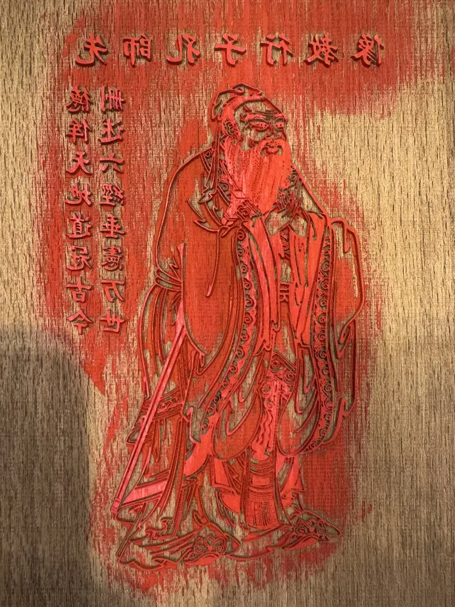

先师孔子行教像Portrait of Confucius
这件作品以端庄的孔子形象，表达对先贤与教育的敬意。印样题有“先师孔子行教像”，并以“德侔天地，道冠古今；删述六经，垂宪万世”的文字颂扬其学问与德行。通过雕版印刷，人物形象与文字一同留在纸上，让知识传承成为可见、可分享的故事。
This dignified portrait of Confucius honours learning and the passing on of knowledge. Its inscriptions praise his wisdom, virtue and lasting influence as a teacher. Printing brings the portrait and its words together on paper, giving this tribute a form that visitors can share.
查看雕版本体 / View the Woodblock
